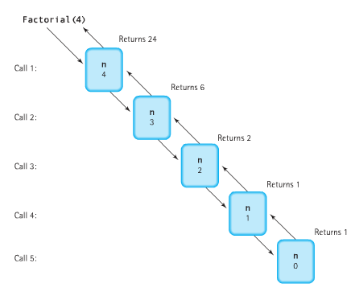
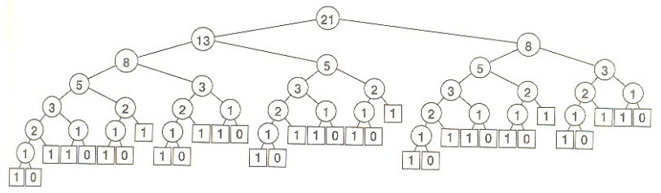
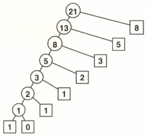
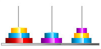
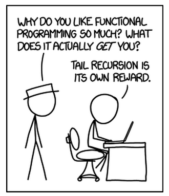

<!DOCTYPE html>

<!-- Mirrored from www.bogotobogo.com/cplusplus/quiz_recursion.php by HTTrack Website Copier/3.x [XR&CO'2014], Mon, 11 Dec 2017 15:03:56 GMT -->
<head>
  <title>C++ Tutorial: Quiz - Recursion - 2017</title>
  <meta content="C++ Tutorial: Quiz - Recursion" name="description" />
  <meta content="C++ Tutorial, Quiz - Recursion, String Permutations, Fibonacci Sequence, Subsets of a Set, Tower of Hanoi, Interview Questions" name="keywords" />
  <meta name="viewport" content="width=device-width, initial-scale=1">

  <link href="http://netdna.bootstrapcdn.com/bootstrap/3.0.0/css/bootstrap.no-icons.min.css" rel="stylesheet">
  <link href="http://netdna.bootstrapcdn.com/font-awesome/4.0.3/css/font-awesome.css" rel="stylesheet">
  <link rel="stylesheet" href="http://fonts.googleapis.com/css?family=Alice|Open+Sans:400,300,700">
  <link rel="stylesheet" href="../public/css/app.css">
  <link rel="stylesheet" href="../public/css/styles.css">
  <link rel="stylesheet" href="../public/css/bogostyleWidePreNew.css">
</head>

<body class="home">
    <nav class="navbar navbar-default navbar-fixed-top">
    <div class="container-fluid">      
      <div class="navbar-header">
        <!--<button type="button" class="navbar-toggle collapsed" data-toggle="collapse" data-target="#navbar" aria-expanded="false" aria-controls="navbar"> -->
        <button type="button" class="navbar-toggle collapsed" data-toggle="collapse" data-target=".navbar-collapse" aria-expanded="false" aria-controls="navbar"> 
          <span class="sr-only">Toggle navigation</span> 
          <span class="icon-bar"></span> 
          <span class="icon-bar"></span> 
          <span class="icon-bar"></span> 
        </button>
        <a class="navbar-brand" href="../index-2.html">BogoToBogo</a>
      </div>
      
      <div class="navbar-collapse collapse">
        
        <ul class="nav navbar-nav">
          <li class="active"><a href="../index-2.html">Home</a></li>
          <li><a href="../about_us.html">About</a></li>
          <li><a href="../Hadoop/BigData_hadoop_Install_on_ubuntu_single_node_cluster.html">Big Data</a></li>
          <li><a href="../python/scikit-learn/Artificial-Neural-Network-ANN-1-Introduction.html">Machine Learning</a></li>
          <li><a href="../AngularJS/AngularJS_Introduction.html">AngularJS</a></li> 
          <li><a href="../python/pytut.html">Python</a></li>
          <li><a href="cpptut.html">C++</a></li>
          <li><a href="../DevOps/DevOps_Jenkins_Chef_Puppet_Graphite_Logstash.html">DevOps </a></li>
          <li><a href="../Algorithms/algorithms.html">Algorithms</a></li> 
          <li class="dropdown">
            <a href="#" class="dropdown-toggle" data-toggle="dropdown">More...<b class="caret"></b></a>
            <ul class="dropdown-menu">
           
              <li><a href="../Qt/Qt5_Creating_QtQuick2_QML_Application_Animation_A.html">Qt 5</a></li>                           
              <li><a href="../Android/android.html">Android</a></li>
              
              <li><a href="../Linux/linux_tips1.html">Linux</a></li>
              <li><a href="../Java/tutorials/on_java.html">Java</a></li>
              <li><a href="../CSharp/.netframework.html">CSharp</a></li>
              <li><a href="../VideoStreaming/videostreaming_etc.html">Video Streaming</a></li>
              <li><a href="../FFMpeg/ffmpeg_fade_in_fade_out_transitions_effects_filters_slideshow_concat.html">FFmpeg</a></li>
              <li><a href="../Matlab/Matlab_Tutorial_Manipulating_Audio_I_Reverse_Delay_Tone_Control_Changing_Speed_Removing_Vocals.html">Matlab</a></li>
              <li><a href="../python/Django/Python_Django_Forums_Shared_Host.html">Django 1.8</a></li>
              <li><a href="../Laravel5/Laravel5_ToDo_List_Sample.html">Laravel 5.2</a></li>
              <li><a href="../RubyOnRails/RubyOnRails.html">Ruby On Rails</a></li>
              <li><a href="../HTML5/HTML5_Tutorial.html">HTML5 & CSS</a></li>
              <li><a href="../AmazingPlaces/index.html" target="_blank">
Earth</a> </li>
            </ul>
          </li>
        </ul>      
      </div>
    </div>  
  </nav>  

  <div id="main">
    <div class="container">
      <div class="row section featured topspace">
        <div class="row">
          <div class="col-sm-9 col-md-9 col-xs-9">
            <h2 class="section-title">C++ Tutorial 
Quiz - Recursion - 2017        <g:plusone></g:plusone></h2>
            <div class="icon-image">
                 
            </div>
            <div class="SocialLinks">
  <span class='st__large' displayText=''></span>
  <br><br>
  <div align="center">
  <span class='st_facebook_large' displayText='Facebook'></span>
  <span class='st_twitter_large' displayText='Tweet'></span>
  <span class='st_linkedin_large' displayText='LinkedIn'></span>
  </div>
  <br><br>
  <script type="text/javascript" src="http://w.sharethis.com/button/buttons.js"></script>
  <script type="text/javascript">stLight.options({publisher: "b9569c43-5f56-4501-92f0-4bf4aa8fceb0", doNotHash: false, doNotCopy: true, hashAddressBar: false});</script>
</div>

<div id="bookmarkshare">
  <script type="text/javascript">var addthis_config = {"data_track_clickback":true};</script>
  <a class="addthis_button" href="http://www.addthis.com/bookmark.php?v=250&amp;username=khhong7"></a>
  <script type="text/javascript" src="http://s7.addthis.com/js/250/addthis_widget.js#username=khhong7"></script>
</div>

<br>
<hr>
<br>


<!-- Google bogo1 ad -->
<!-- Google search box -->


<!-- bogo1 -->
<div>
  <script async src="http://pagead2.googlesyndication.com/pagead/js/adsbygoogle.js"></script>
  <!-- bogo1 -->
  <ins class="adsbygoogle"
     style="display:inline-block;width:728px;height:90px"
     data-ad-client="ca-pub-4716428189734495"
     data-ad-slot="6542308167"></ins>
  <script>
   (adsbygoogle = window.adsbygoogle || []).push({});
  </script>
</div>


<!-- Google search box -->
<div class="AdSenseSearch">
  bogotobogo.com site search:
  <form action="http://www.google.com/" id="cse-search-box" target="_blank">
    <div>
      <input type="hidden" name="cx" value="partner-pub-4716428189734495:1794050961" />
      <input type="hidden" name="ie" value="UTF-8" />
      <!--<input type="text" name="q" size="55" />-->
      <input type="text" name="q" size="" width="90%"/>
      <input type="submit" name="sa" value="Search" />
    </div>
  </form>
  <script type="text/javascript" src="http://www.google.com/coop/cse/brand?form=cse-search-box&amp;lang=en"></script>
</div>


<hr>
            <br><br><br>
<div class="subtitle" id="recursion">Codes - Recursion</div>
<p>Recursion is a deceptively simple concept. Any routine that calls itself is recursive. The concept is quite simple and clear, however, understanding and applying recursion can be amazingly complex.</p>
<p>Unlike repetitive/conditional cases, recursion is not a concept that comes up in daily life. Because it is unfamiliar, learning how to use recursion can be tough, and reaching a certain level of understanding takes a considerable time and practices. However, learning how to use recursion is worth the effort. Recursion, as a problem solving tool, can be so powerful that it sometimes seems almost magical, and using recursion makes it possible to write otherwise complicated programs in very simple and elegant way.</p>
<p>Recursion is useful for tasks that can be defined in terms of similar subtasks. For instance, sort, search, and traversal problems often have simple recursive solutions. A recursive routine performs a task in part by calling itself to perform the subtasks. However, a recursive program cannot call itself always, or it would never stop. So, at some point, the routine encounters a subtask that it can perform without calling itself. This case is called the <strong>base case</strong>. The other case, in which the routine calls itself to perform a subtask, is called as <strong>recursive case</strong>.</p>
<p>The typical recursive coding takes the following form:</p>
<pre>
if (test for simple case) {
    return (simple computation without recursion);
} else {
    return (recursive solution);
}
</pre>
<p>Many interesting algorithms are simply expressed with recursive programs, and many algorithm designers prefer to express methods recursively.</p>
<p>There 
are usually fewer local variables in a recursive routine than in an iterative routine. Also, 
the iterative version always contains a loop, whereas the recursive version always contains 
a selection statement-either an "if" or a "switch". A branching structure is the main control 
structure in a recursive routine while a looping structure is the main control structure in an iterative routine.</p>
<p>Any problem that can be solved recursively can also be solved iteratively. We often find nonrecursive alternatives that achieve the same final result through a different sequence of computations while the recursive formulation provides a structure within which we can seek more efficient alternatives. <strong>Iterative algorithms</strong> are often quite easy to write, even for tasks that might appear to be fundamentally recursive. Iterative solutions are usually more efficient than recursive solutions.</p>
<br/>
<div class="subtitle_2nd" id="printing">Printing a String Reversed</div>
<p>Here we have two print functions, one for normal and the other one for printing a string in reverse.</p>
<pre>
#include &lt;iostream&gt;

using namespace std;

void normalPrint(char *s)
{
	if(*s) {
		putchar(*s);
		normalPrint(s+1);
	}
}
void reversePrint(char *s)
{
	if(*s) {
		reversePrint(s+1);
		putchar(*s);
	}
}

int main() 
{
	char *str = "Normal or Reverse";
	normalPrint(str);
	cout &lt;&lt; endl;
	reversePrint(str);
	cout &lt;&lt; endl;
	return 0;
}
</pre>
<p>Output is:</p>
<pre>
Normal or Reverse
esreveR ro lamroN
</pre>
<br/>
<div class="subtitle_2nd" id="factorial">Factorial</div>
<pre>
#include &lt;iostream&gt;

using namespace std;

int factorial(int n)
{
	if(n == 0 || n == 1) return 1;

	return n * factorial(n-1);
}

int factorial_iter(int n)
{
	int fact = 1;
	for(int i = n; i &gt; 1; i--) {
		fact *= i;
	}
	return fact;
}

int f[100] = {0};

int factorial_dynamic(int n)
{
	if(f[n]) return f[n];
	if(n == 0 || n == 1) {
		f[n] = 1;
		return f[n];
	}	
	f[n] = n*factorial(n-1);
	return f[n];
}

int main()
{
	cout &lt;&lt; "recursive factorial 10! = " 
			&lt;&lt; factorial(10) &lt;&lt; endl;
	cout &lt;&lt; "iterative factorial 10! = " 
			&lt;&lt; factorial_iter(10) &lt;&lt; endl;
}
</pre>
<p>With output</p>
<pre>
recursive factorial 10! = 3628800
iterative factorial 10! = 3628800
</pre>
<br/>

<br/>
<br/>
<p>We use recursion because it often allows us to express complex algorithms in a compact form, without sacrificing efficiency. As we saw from the example, the recursive implementation of the factorial function obviates the need for <strong>local</strong> variables. The iterative version has two local variables (<strong>fact</strong> and <strong>i</strong>), whereas the recursive version has <strong>none</strong>. There are usually fewer local variables in a recursive routine than in an iterative routine.
The cost of the recursive implementation is borne by the mechanisms in the programming environment that supports function calls, which use the equivalent of a built-in pushdown stack.</p>
<div class="subtitle_2nd" id="n_to_the_kth_power">n**k</div>
<pre>
#include &lt;iostream&gt;

using namespace std;

int n_to_the_kth_power(int n, int k)
{
	if (k == 0) 
		return 1;
	else 
		return n * n_to_the_kth_power(n, k-1);
}

int main ()
{

  int n = 2, k = 10;
  while (k &gt;= 0) {
	  cout &lt;&lt; n &lt;&lt; "**" &lt;&lt; k &lt;&lt; " = " &lt;&lt; n_to_the_kth_power(n,k) &lt;&lt; endl; 
	  k--;
  }
  while(1) {}
  return 0;
}
</pre>
<p>The output is:</p>
<pre>
2**10 = 1024
2**9 = 512
2**8 = 256
2**7 = 128
2**6 = 64
2**5 = 32
2**4 = 16
2**3 = 8
2**2 = 4
2**1 = 2
2**0 = 1
</pre>
<br/>
<br/>
<div class="subtitle_2nd" id="gcd">Greatest Common Divisors</div>
<p>The following is a compact implementation of <strong>Euclid's algorithm</strong> for finding the <strong>greatest common divisor</strong> of two integers. It is base on the observation that the greatest common divisor of two integers <strong>m</strong> and <strong>n</strong> with <strong>m</strong> &gt; <strong>n</strong>  is the same as the greatest common divisor of <strong>n</strong> and <strong>m mod n</strong>.</p>
<pre>
#include &lt;iostream&gt;
using namespace std;

int gcd (int m, int n)
{
	if(n == 0) return m;
	cout &lt;&lt; "gcd(" &lt;&lt; m &lt;&lt; ',' &lt;&lt; n &lt;&lt;')'&lt;&lt; endl; 
	return gcd(n, m % n);
}

int main()
{
	cout &lt;&lt; "gcd = " &lt;&lt; gcd(1256636, 1630968) &lt;&lt; endl;
	return 0;
}
</pre>
<p>Output from the code is:</p>
<pre>
gcd(1256636,1630968)
gcd(1630968,1256636)
gcd(1256636,374332)
gcd(374332,133640)
gcd(133640,107052)
gcd(107052,26588)
gcd(26588,700)
gcd(700,688)
gcd(688,12)
gcd(12,4)
gcd = 4
</pre>
<p>Iterative code:</p>
<pre>
int gcd_iterative(int m, int n)
{
	int temp;
	while(n != m % n) {
	    temp = n;
	    n = m % n;
	    m = temp;
	    if(n == 0) return m;
	}
	return m;
}
</pre>
<br/>
<br/>
<br/>
<div class="subtitle_2nd" id="mat_mul">Matrix Multiplication -  Recursive and Iterative</div>
<pre>
#include &lt;iostream&gt;

using namespace std;

const int M1 = 3, N1 = 2;  // matrix A
const int M2 = 2, N2 = 4;  // matrix B

// iterativie

void matmul(int a[][N1], int b[][N2], int c[][N2])
{
	for(int i = 0; i &lt; M1; i++) {
		for(int j = 0; j &lt; N2; j++) {
			for(int k = 0; k &lt; N1; k++) {
				c[i][j] = c[i][j] + a[i][k]*b[k][j];
			}
		}
	}
}


// recursive

void matmulr(int a[M1][N1], int b[M2][N2], int c[M1][N2])
{
	static int i = 0, j = 0, k = 0;
	if(i &lt; M1) {
		if(j &lt; N2) {
			if(k &lt; N1) {
				c[i][j] += a[i][k]*b[k][j];
				k++;
				matmulr(a,b,c);
			}
			k = 0;
		        j++;
			matmulr(a,b,c);
		}
		j = 0;
		i++;
		matmulr(a,b,c);
	}
}

int main()
{
	int a[M1][N1] = {{1,2},
	                 {3,4},
	                 {5,6}};

	int b[M2][N2] = {{1,2,3,4},
		         {5,6,7,8}};

	int c[M1][N2] = {0};

	matmul(a, b, c);    // iterative
	matmulr(a, b, c);   // recursive

	/* C = {{11,14,17,20}, 
	        {23,30,37,44}, 
		{35,46,57,68}} */
	 	
	return 0;
}
</pre>
<p>The complexity is O(n^3), however, there is another algorithm called <a href="http://en.wikipedia.org/wiki/Strassen_algorithm" target="_blank">Strassen's subcubic algorithm</a> which gives O(n^2.8) complexity. 
<br/>
<br/>
<br/>
<div class="subtitle_2nd" id="fibonacci">Fibonacci Sequence - Recursive, Iterative, and Dynamic programming</div>
<br/>
<p>Below are the pictures showing what's happening when we use recursive algorithm. Since the recursive algorithm is doing the same calculation repeatedly it becomes slow when it does those recalculation so many times. So, we need to do dynamic programming where the pre-computed values are saved and used in later calculations.</p>

<br/>

<p>Pictures are from <a href="http://www.sph.umich.edu/csg/abecasis/class/2006/615.05.pdf" target+_blank">Recursion and 
Dynamic Programming</a></p>
<br/>
<p>As we can see from the pictures, the advantage of using dynamic programming approach over simple recursive algorithm is clear.</p>
<br/>
<p>The following code shows three ways of calculating Fibonacci sequence: simple recursive, iterative, and dynamic programming:</p>
<pre>
#include &lt;iostream&gt;
using namespace std;

int fibo(int n)
{
	if(n == 0 || n == 1) return n;
	return fibo(n-1)+fibo(n-2);
}

int fibo_iter(int n)
{
	if(n == 0 || n == 1) return n;

	int f0 = 0, f1 = 1, f2;
	for(int i = 2; i &lt;= n; i++) {
		f2 = f0 + f1;
		f0 = f1;
		f1 = f2;
	}
	return f2;
}

int fibo_dynamic(int n)
{
        static int saved[100] = {0};

	if(saved[n] != 0) return saved[n];

	if(n == 0 || n == 1) {
		saved[n] = n;
		return saved[n];
	}

	saved[n] = fibo_dynamic(n-1)+fibo_dynamic(n-2);

	return saved[n];
}

int main()
{
	int i;
	int n = 15;
	cout &lt;&lt; "recursive Fibonacci " &lt;&lt; endl;
	for(i = 0; i &lt; n; i++) 
		cout &lt;&lt;  fibo(i) &lt;&lt; " ";
	cout &lt;&lt; endl;

	cout &lt;&lt; "iterative Fibonacci " &lt;&lt; endl;
	for(i = 0; i &lt; n; i++) 
		cout &lt;&lt;  fibo_iter(i) &lt;&lt; " ";
	cout &lt;&lt; endl;

	cout &lt;&lt; "dynamic Fibonacci " &lt;&lt; endl;
	for(i = 0; i &lt; n; i++) 
		cout &lt;&lt;  fibo_dynamic(i) &lt;&lt; " ";
	cout &lt;&lt; endl;

	return 0;
}
 
</pre>
<p>Output is: </p>
<pre>
recursive Fibonacci
0 1 1 2 3 5 8 13 21 34 55 89 144 233 377
iterative Fibonacci
0 1 1 2 3 5 8 13 21 34 55 89 144 233 377
dynamic Fibonacci
0 1 1 2 3 5 8 13 21 34 55 89 144 233 377
</pre>
<br/>
<br/>
<div class="subtitle_2nd" id="binarysearch">Binary Search</div>
<p>This binary search code performs a binary search on a sorted array of integers to find the index of a given integer.</p>
<pre>
#include &lt;iostream&gt;

using namespace std;

const int LIMITS_REVERSED = -1;
const int NOT_IN_ARRAY = -2;
const int UNSORTED_ARRAY = -3;

int binarySearch(int arr[], int lower, int upper, int target)
{
	if(lower &gt; upper)
		return LIMITS_REVERSED;
	else if(lower == upper &amp;&amp; arr[lower] != target)
		return NOT_IN_ARRAY;
	
	if(arr[lower] &gt; arr[upper])
		return UNSORTED_ARRAY;

	int center = (upper - lower)/2 + lower;
	if(target == arr[center])
		return center;
	else if(target &lt; arr[center])
		return binarySearch(arr, lower, center - 1, target);
	else
		return binarySearch(arr, center + 1, upper, target);
}

int binarySearch_iter(int arr[], int lower, int upper, int target)
{
	while(true) {
		if(lower &gt; upper)
			return LIMITS_REVERSED;
		else if(lower == upper &amp;&amp; arr[lower] != target)
			return NOT_IN_ARRAY;
		if(arr[lower] &gt; arr[upper])
			return UNSORTED_ARRAY;

		int center = (upper - lower)/2 + lower;
		if(target == arr[center])
			return center;
		else if(target &lt; arr[center])
			upper = center - 1;
		else
			lower = center + 1;
	}
}

void message(int error)
{
	if(error == LIMITS_REVERSED)
		cout &lt;&lt; "LIMITS_REVERSED\n";
	else if(error == NOT_IN_ARRAY)
		cout &lt;&lt; "NOT_IN_ARRAY\n";
	else if(error == UNSORTED_ARRAY)
		cout &lt;&lt; "UNSORTED_ARRAY\n";
	else
		return;
}

int main()
{
	/* sorted array */
	int arr[10] = {1, 3, 5, 7, 9, 11, 13, 15, 17, 19};

	int target = 17;
	int lower = 0;
	int upper = sizeof(arr) / sizeof(int) -1 ;
	int index;

	index = binarySearch(arr, lower, upper, target);
	message(index);
	if(index &gt;= 0) {
		cout &lt;&lt; "Recursive: target is =" &lt;&lt; target &lt;&lt; endl;
		cout &lt;&lt; "arr[" &lt;&lt; index &lt;&lt; "] = " &lt;&lt; arr[index] &lt;&lt; endl;
	}

	index = binarySearch_iter(arr, lower, upper, target);
	message(index);
	if(index &gt;= 0) {
		cout &lt;&lt; "Iterative: target is =" &lt;&lt; target &lt;&lt; endl;
		cout &lt;&lt; "arr[" &lt;&lt; index &lt;&lt; "] = " &lt;&lt; arr[index] &lt;&lt; endl;
	}
	return 0;
}
</pre>
<p>Output from the run is:</p>
<pre>
Recursive: target is =17
arr[8] = 17
Iterative: target is =17
arr[8] = 17
</pre>
<br/>
<br/>
<div class="subtitle_2nd" id="stringpermutationA">String Permutations A</div>
<p>This code computes all permutations of a string. <br/>
If our string is <strong>abs</strong>, the permutations are: <br/>
<strong>abc, bac, bca, acb, cab, cba </strong>.</p>
<p>The following algorithm works this way:</p>
<ol>
<li>Take out 'a' from "abc".</li>
<li>Now, we have ["bc","cb"].</li>
<li>Insert the 'a' into "bc", so that we have "abc", "bac", and "bca".
In the same way, put 'a' into "cb", then we get "acb", "cab", and "cba".</li>
</ol>
<p>With "abcde", we have following levels of recursion:</p>
<pre>
before: abcde  (pulling out a) enter: Permutation("bcde")
before: bcde  (pulling out d) enter: Permutation("bce")
before: bce  (pulling out c) enter: Permutation("be")
before: be  (pulling out e) enter: Permutation("b")
before: b  (pulling out b) enter: Permutation ("")
before:   (bottom out)     leave: s = ""
after: b   (adding the b)   leave: s = "b"
after: eb   (adding the e)   leave: s = "eb"
after: ceb   (adding the c)   leave: s = "ceb"
after: dceb   (adding the d)   leave: s = "dceb"
after: adceb   (adding the a)   leave: s = "adceb"
</pre>
<p>Here is the code:</p>
<pre>
#include &lt;iostream&gt;
#include &lt;string&gt;
#include &lt;vector&gt;

using namespace std;

vector&lt;string&gt; <font color="red">permute</font>(string s)
{
	vector&lt;string&gt; permutations;

	if(s.length() == 0) {
		permutations.push_back("");
		return permutations;
	}

	char first = s.at(0);
	string remainder = s.substr(1);
	vector&lt;string&gt; words = <font color="red">permute</font>(remainder);
	string word;
	for(size_t j = 0; j &lt; words.size(); j++) {
		for(size_t i = 0; i &lt;= words[j].length(); i++) {
			word = words[j];
			permutations.push_back(word.insert(i,1,first));
		}
	}
	return permutations;
}

int main()
{
	vector&lt;string&gt; result;
	string str = "abcde";
	
	result = <font color="red">permute</font>(str); 

	for(size_t i = 0; i &lt; result.size(); i++) {
		cout &lt;&lt; i &lt;&lt; ": " &lt;&lt; result[i] &lt;&lt; endl;
	}
	return 0;
}
</pre>
<p>Output is:</p>
<pre>
0: abcde
1: bacde
2: bcade
3: bcdae
4: bcdea
5: acbde
...
115: aedcb
116: eadcb
117: edacb
118: edcab
119: edcba
</pre>
<br/>
<br/>
<div class="subtitle_2nd" id="stringpermutationB">String Permutations B</div>
<pre>
/* String Permutation */

#include &lt;iostream&gt;
using namespace std;

void swap(char* st1, char* st2)
{
	char ch = *st2;
	*st2 = *st1;
	*st1 = ch;
}

int permute(char* str, int start, int end)
{
	if (end - start == 1) {
		cout &lt;&lt; str &lt;&lt; endl;
	} 
	else {
		for(int i=0; i &lt; end - start; i++) {
			swap(&amp;str;[start], &amp;str;[start+i]);	
			permute(str, start+1, end);				
			swap(&amp;str;[start], &amp;str;[start+i]);       
		}
	}
	return 0;
}

int main()
{
	char str[255] = "abc"; 
	permute(str, 0, strlen(str)); 
	return 0;
}
</pre>
<p>Output is </p>
<pre>
abc
acb
bac
bca
cba
cab
</pre>
<br/>
<br/>
<div class="subtitle_2nd" id="stringcombination">String Combinations</div>
<p>The following code produces all combinations of a given string. In this example, we're using the term <strong>depth of the recursion</strong>. It is the maximum degree of nesting of the function calls over the course of the computation. </p>
<p>Generally, the depth will depend on the input. So, when we write a recursive code, we need to take into account that the programming environment has to maintain a <strong>pushdown stack</strong> of size proportional to the depth of the recursion. Therefore, for a huge problem, we may not be able to resort the recursive approach because of the space needed for stack size.</p>
<p>Data structures build from nodes with pointers are inherently recursive. Linked list, for example, is recursive. So, recursive codes provide natural implementations of many common functions for manipulating such data structures.</p>
<pre>
#include &lt;iostream&gt;
#include &lt;cstring&gt;
using namespace std;

/* depth: the recursion depth 
	    or the index into the output string of the character 
		that's being generated.  */
/* start: the index of the first of the still available letters */

void combinations(char *input, char *output, 
    int len, int depth, int start)
{
    /* At the current depth, 
	   cycle through the still available letters */

    for( int i = start; i &lt; len; i++ ) {
        output[depth] = input[i];
        combinations(input, output, len, depth+1, i+1);
    }
    output[depth] = '\0';
    cout &lt;&lt; output &lt;&lt; endl;
}

int main() 
{
    char *input = "abcd";
	char *output = new char[strlen(input) + 1];

	combinations(input, output, strlen(input), 0, 0);
	delete [] output;
} 
</pre>
<p>Output from the run is:</p>
<pre>
abcd
abc
abd
ab
acd
ac
ad
a
bcd
bc
bd
b
cd
c
d
</pre>
<br/>
<br/>
<div class="subtitle_2nd" id="subsets">Subsets of a Set</div>
<p>This code can be summarized as following:</p>
<ol>
<li>Each element in a set can be in either <strong>yes</strong> or <strong>no</strong> state. This means that each subset is a sequence of <strong>yes/no</strong>, e.g., set with 4 elements, the state can be yes, yes, no, yes.</li>
<li>This gives us 2<sup>n</sup> possible subsets. <br/>
	How can we iterate through all possible sequences of <strong>yes/no</strong> states for all elements?<br/>
	If each <strong>no</strong> can be treated as 0 and each <strong>yes</strong> can be treated as a 1, then each subset can be represented as a binary string.</li>
<li>Generating all subsets then really just comes down to generating all binary numbers.</li>
</ol>
<pre>
/* subsets of a set - recursive */

#include &lt;iostream&gt;
#include &lt;vector&gt;

using namespace std;

vector<vector<int>&gt; getSubsets(vector<int> &amp;set;)
{
	vector<vector<int>&gt; allSubsets;

	int max = 1 &lt;&lt; set.size();
	for(int i = 0; i &lt; max; i++) {
		vector<int> subset;
		int j = i;
		int index = 0;
		while (j &gt; 0) {
			if((j &amp; 1) &gt; 0) 
				subset.push_back(set[index]);
			j &gt;&gt;= 1;
			index++;
		}
		allSubsets.push_back(subset);
	}
	return allSubsets;
}

int main() 
{
	vector<int> v;
	v.push_back(1);
	v.push_back(2);
	v.push_back(3);
	v.push_back(4);

	vector<vector<int>&gt; vv;

	vv = getSubsets(v);
	
	for(int i = 0; i &lt; vv.size(); i++) {
		cout &lt;&lt; '(';
		for(int j = 0; j &lt; vv[i].size(); j++) {
			cout &lt;&lt; vv[i][j] &lt;&lt; ' ';
		}
		cout &lt;&lt; ')' &lt;&lt; endl;
	}

	return 0;
}
</vector<int></int></int></vector<int></int></vector<int></pre>
<p>Output is:</p>
<pre>
()
(1 )
(2 )
(1 2 )
(3 )
(1 3 )
(2 3 )
(1 2 3 )
(4 )
(1 4 )
(2 4 )
(1 2 4 )
(3 4 )
(1 3 4 )
(2 3 4 )
(1 2 3 4 )
</pre>
<br/>
<p>The recursion is intertwined with the recursively defined structures known as <strong>trees</strong>. So, we can find additional codes related to recursion from the tree structures:</p>
<br/>
<ol>
<li><a href="binarytree.html">Binary Tree Example Code</a></li>
</ol>
<br/>
<br/>
<br/>
<div class="subtitle_2nd" id="TowerOfHanoi">Tower of Hanoi</div>
<br/>

<br/>
<br/>
<pre>
#include &lt;iostream&gt;
using namespace std;

void tower(int a, char from, char buf, char to){
    if(a==1) {
       cout &lt;&lt; "Move disc 1 from " &lt;&lt; from&lt;&lt; " to "&lt;&lt; to &lt;&lt; "\n";
       return;
    }
    else {
       tower(a-1, from, to, buf);
       cout &lt;&lt; "Move disc " &lt;&lt; a &lt;&lt; " from "&lt;&lt; from &lt;&lt; " to "&lt;&lt; to &lt;&lt; "\n";
       tower(a-1, buf, from, to);
    }
}

int main()
{
     tower(3, 'A', 'B', 'C');
     return 0;
}
</pre>
<p>Output:</p>
<pre>
Move disc 1 from A to C
Move disc 2 from A to B
Move disc 1 from C to B
Move disc 3 from A to C
Move disc 1 from B to A
Move disc 2 from B to C
Move disc 1 from A to C
</pre>
<p>Given three rods and  $n$ disks, the sequence  $S_1 = \{a_k\}$ giving the number of the disk ($i=1$ to $n$) to be moved at the $k$th step is given by the remarkably simple recursive procedure of starting with the list $S_1 = \{1\}$ for a single disk, and recursively computing
$$S_n = \{S_{n-1}, n, S_{n-1}\}.$$
For the first few values of $n$, this gives the sequences shown in the following table. A solution of the three-rod four-disk problem is illustrated above. The sequence represents the disk on the move:</p>
<br/>
<table border="3" cellpadding="5">
<tr>
<th>$n$</th>
<th>$S_n$</th>
</tr>
<tr>
<td>1</td>
<td><font color="red">1</font></td>
</tr>
<tr>
<td>2</td>
<td>1,<font color="red">2</font>,1</td>
</tr>
<tr>
<td>3</td>
<td>1,2,1,<font color="red">3</font>,1,2,1</td>
</tr>
<tr>
<td>4</td>
<td>1,2,1,3,1,2,1,<font color="red">4</font>,1,2,1,3,1,2,1</td>
</tr>
</table>
<br/>
<p>The property of the sequence is discussed in <br/><a href="http://mathworld.wolfram.com/TowerofHanoi.html" target="_blank">http://mathworld.wolfram.com/TowerofHanoi.html</a>.</p>
<br/>
<br/>
<br/>
<br/>
<div class="subtitle_2nd" id="path_grid">Path on a grid</div>
<p>Finding a path from (0,0) to (M,N) and there are some grid points not allowed to visit.</p>
<pre>
#include &lt;iostream&gt;
#include &lt;vector&gt;
#include &lt;map&gt;

using namespace std;

const int  M = 5, N = 4;

class Point
{
	int x, y;
public:
	Point(int a, int b) : x(a), y(b) {}
	int getX() { return x;}
	int getY() { return y;}
};

bool isFree(int x, int y)
{
	if(x == 0 &amp;&amp; y == 1) return false;
	if(x == M-1 &amp;&amp; y == N-1) return false;
	return true;
}

bool getPath(int x, int y, vector&lt;Point*&gt;&amp; path, map&lt;Point*, bool&gt;&amp; pMap)
{
	bool go = false;
	Point *p = new Point(x,y);
	if(x == 0 &amp;&amp; y == 0) return true;
	if(x &gt;= 1 &amp;&amp; !pMap[p] &amp;&amp; isFree(x,y)) go = getPath(x-1,y, path, pMap);
	if(!go &amp;&amp; y &gt;= 1 &amp;&amp; !pMap[p] &amp;&amp; isFree(x,y)) go = getPath(x,y-1, path, pMap);
	if(go &amp;&amp; isFree(x,y)) {
		path.push_back(p);
		pMap.insert(make_pair(p, true));
	}
	return go;
}

int main()
{
	vector&lt;Point *&gt; path;
	map&lt;Point *, bool&gt; pMap;
	getPath(M, N, path, pMap);
	for(int i = 0; i &lt; path.size(); i++) 
		cout &lt;&lt; path[i]-&gt;getX() &lt;&lt; "," &lt;&lt; path[i]-&gt;getY() &lt;&lt; endl;

	return 0;
}
</pre>
<p>Output:</p>
<pre>
1,0
1,1
1,2
1,3
1,4
2,4
3,4
4,4
5,4
</pre>
<br/>
<br/>
<br/>
<div class="subtitle_2nd" id="more_dynamic">Dynamic programming</div>
<p>For more on dynamic programming, please visit <a href="../Algorithms/dynamic_programming.html" target="_blank">Algorithms - Dynamic Programming</a>.</p>
<br/>
<br/>
<br/>
<br/>
<div class="subtitle_2nd" id="reverse_print">Reverse printing a linked list</div>
<p>The following code print elements of a linked list in reverse order (from tail to head)
<pre>
#include <iostream>
using namespace std;

typedef struct node
{
	int data;
	node* next;
} node;

class List
{
public:
	List(node* n = 0):head(n){}
	void addNode(int d);
	void print();
	void reverse_print(node *);
	node* getHead() {return head;}
private:
	node* head;
};

void List::addNode(int d)
{
	if(head == 0) {
		head = new node;
		head-&gt;data = d;
		head-&gt;next = 0;
		return;
	} 

	node* ptr = head;

	while(ptr) {
		if(ptr-&gt;next == 0) {
			ptr-&gt;next = new node;
			ptr-&gt;next-&gt;data = d;
			ptr-&gt;next-&gt;next = 0;
			break;
		}
		ptr = ptr-&gt;next;
	}
}

void List::print()
{
	node* ptr = head;
	while(ptr) {
		cout &lt;&lt; ptr-&gt;data &lt;&lt; " ";
		ptr = ptr-&gt;next;
	}
	cout &lt;&lt; endl;
}

void List::<font color="red">reverse_print(node *ptr)</font>
{
	if(ptr == 0) return;

	reverse_print(ptr-&gt;next);
	cout &lt;&lt; ptr-&gt;data &lt;&lt; " ";
}

int main()
{
	List L = List();
	L.addNode(1);L.addNode(2);L.addNode(3);L.addNode(4);L.addNode(5);
	L.print();
	L.reverse_print(L.getHead());
}
</iostream></pre>
<p>Output:</p>
<pre>
1 2 3 4 5 
5 4 3 2 1
</pre>
<br/>
<br/>
<br/>
<div class="subtitle_2nd" id="TailRecursion">Tail Recursion</div>
<br/>

<br/>
<br/>
<p>With recursive approach, we may have stack overflow issue. That's where we use another approach, <b>tail recursion</b>:</p>
<p><b>Tail Recursion</b>:</p>
<pre>
def fact(n, <font color="red">current_fact=1</font>):
    if n == 1:
        return current_fact
    else:
        return fact(n-1, <font color="red">current_fact*n</font>)
</pre>
<p>Compare the code above with the normal recursive algorithm:</p>
<p><b>Normal Recursion</b>:</p>
<pre>
def fact(n):
    if n == 1:
        return n
    else:
        return n*fact(n-1)
</pre>
<br/>
<p>Here is the steps that actually happening in tail recursive:</p>
<pre>
fact(4, 1)
return fact (3,  1 * 4 )  //n == 4
return fact (2,  4 * 3 )  //n == 3
return fact (1,  12 * 2 ) //n == 2
return 24                 //n == 1
</pre>
<p>In tail recursive, each function call carries current factorial value. So, the final(tail) function call has the result.</p>
<p>Compare the above with the steps for normal recursive calls:</p>
<pre>
(fact  4)
(4 * (fact  3))
(4 * (3 * (fact  2)))
(4 * (3 * (2 * (fact  1))))
(4 * (3 * (2 (* 1))))
(4 * (3 * (2)))
(4 * (6))
24
</pre>
</p></p>
<div>
    
<div class="custom-disqus">
<!-- Disqus -->
<div id="disqus_thread"></div>
<script>
    /**
     *  RECOMMENDED CONFIGURATION VARIABLES: EDIT AND UNCOMMENT THE SECTION BELOW TO INSERT DYNAMIC VALUES FROM YOUR PLATFORM OR CMS.
     *  LEARN WHY DEFINING THESE VARIABLES IS IMPORTANT: https://disqus.com/admin/universalcode/#configuration-variables
     */
     
/* Disabling Disqus 4/26/2017
    var disqus_config = function () {
        this.page.url = window.location.href;
        this.page.identifier = document.title;
    };
    
    (function() {  // REQUIRED CONFIGURATION VARIABLE: EDIT THE SHORTNAME BELOW
        var d = document, s = d.createElement('script');
        
        s.src = '//bogotobogocom.disqus.com/embed.js';  // IMPORTANT: Replace EXAMPLE with your forum shortname!
        
        s.setAttribute('data-timestamp', +new Date());
        (d.head || d.body).appendChild(s);
    })();
 Disabling Disqus */    
</script>
<noscript>Please enable JavaScript to view the <a href="https://disqus.com/?ref_noscript" rel="nofollow">comments powered by Disqus.</a></noscript>

<!-- Disqus ends here -->
</div>

<br>
<br>
<br>
<br></div>
          </div>
          <div class="col-sm-3 col-md-3 col-xs-3">
  	    <div class="g-person" data-width="1" data-href="//plus.google.com/111664369941456137911" data-rel="author">
  	    </div>
            <div class="resume">
              <p>Ph.D. / Golden Gate Ave, San Francisco / Seoul National Univ / Carnegie Mellon / UC Berkeley / DevOps / Deep Learning / Visualization</p>
            </div>
  	    <div>
                
<div class="skyscraper">
  <br>


<div class="skyscraper">

  <div class="bogo-paypal">
    <!-- Paypal Donate button -->
    <p><i>Sponsor Open Source development activities and free contents for everyone.</i></p>

    <form action="https://www.paypal.com/cgi-bin/webscr" method="post" target="_top">
    <input type="hidden" name="cmd" value="_s-xclick">
    <input type="hidden" name="encrypted" value="-----BEGIN PKCS7-----MIIHRwYJKoZIhvcNAQcEoIIHODCCBzQCAQExggEwMIIBLAIBADCBlDCBjjELMAkGA1UEBhMCVVMxCzAJBgNVBAgTAkNBMRYwFAYDVQQHEw1Nb3VudGFpbiBWaWV3MRQwEgYDVQQKEwtQYXlQYWwgSW5jLjETMBEGA1UECxQKbGl2ZV9jZXJ0czERMA8GA1UEAxQIbGl2ZV9hcGkxHDAaBgkqhkiG9w0BCQEWDXJlQHBheXBhbC5jb20CAQAwDQYJKoZIhvcNAQEBBQAEgYC0In+maN+zseQtRj6SJqP9kj2LLvKf0yFklTm01uHY7UwgB3YJ0MZwvi6iERXfh4x2/KVYyMzY6elATG68c3gd6gb0Pqca380dXCg2Xua8jlW0pTZ3UabUNkpYi0iIwMSUsvWKbIw9eX8cBljOrYU1CXNuk46c0Yz2J3lGG+xCZTELMAkGBSsOAwIaBQAwgcQGCSqGSIb3DQEHATAUBggqhkiG9w0DBwQI23eIgGIDbFqAgaDMolOA+os0Y06D0j9NgHZJahDCSSl3deolhu6gz8hNd0SKwNAMBDPd5LBjJ7v6QgReCprB9L2E6CVpXZwgyLnzPC/wHbQG0Qd9sc/CqbiFy2FaJodDtPbRS8mOh+aHph0pNXgZ2kRA8uqVGIRF5gc0d6wqx7+NrPK5FehCMWoGGTmfTTMlykPVQhwDAY8+QFNSbCnqih5GXX62XpkmMJWFoIIDhzCCA4MwggLsoAMCAQICAQAwDQYJKoZIhvcNAQEFBQAwgY4xCzAJBgNVBAYTAlVTMQswCQYDVQQIEwJDQTEWMBQGA1UEBxMNTW91bnRhaW4gVmlldzEUMBIGA1UEChMLUGF5UGFsIEluYy4xEzARBgNVBAsUCmxpdmVfY2VydHMxETAPBgNVBAMUCGxpdmVfYXBpMRwwGgYJKoZIhvcNAQkBFg1yZUBwYXlwYWwuY29tMB4XDTA0MDIxMzEwMTMxNVoXDTM1MDIxMzEwMTMxNVowgY4xCzAJBgNVBAYTAlVTMQswCQYDVQQIEwJDQTEWMBQGA1UEBxMNTW91bnRhaW4gVmlldzEUMBIGA1UEChMLUGF5UGFsIEluYy4xEzARBgNVBAsUCmxpdmVfY2VydHMxETAPBgNVBAMUCGxpdmVfYXBpMRwwGgYJKoZIhvcNAQkBFg1yZUBwYXlwYWwuY29tMIGfMA0GCSqGSIb3DQEBAQUAA4GNADCBiQKBgQDBR07d/ETMS1ycjtkpkvjXZe9k+6CieLuLsPumsJ7QC1odNz3sJiCbs2wC0nLE0uLGaEtXynIgRqIddYCHx88pb5HTXv4SZeuv0Rqq4+axW9PLAAATU8w04qqjaSXgbGLP3NmohqM6bV9kZZwZLR/klDaQGo1u9uDb9lr4Yn+rBQIDAQABo4HuMIHrMB0GA1UdDgQWBBSWn3y7xm8XvVk/UtcKG+wQ1mSUazCBuwYDVR0jBIGzMIGwgBSWn3y7xm8XvVk/UtcKG+wQ1mSUa6GBlKSBkTCBjjELMAkGA1UEBhMCVVMxCzAJBgNVBAgTAkNBMRYwFAYDVQQHEw1Nb3VudGFpbiBWaWV3MRQwEgYDVQQKEwtQYXlQYWwgSW5jLjETMBEGA1UECxQKbGl2ZV9jZXJ0czERMA8GA1UEAxQIbGl2ZV9hcGkxHDAaBgkqhkiG9w0BCQEWDXJlQHBheXBhbC5jb22CAQAwDAYDVR0TBAUwAwEB/zANBgkqhkiG9w0BAQUFAAOBgQCBXzpWmoBa5e9fo6ujionW1hUhPkOBakTr3YCDjbYfvJEiv/2P+IobhOGJr85+XHhN0v4gUkEDI8r2/rNk1m0GA8HKddvTjyGw/XqXa+LSTlDYkqI8OwR8GEYj4efEtcRpRYBxV8KxAW93YDWzFGvruKnnLbDAF6VR5w/cCMn5hzGCAZowggGWAgEBMIGUMIGOMQswCQYDVQQGEwJVUzELMAkGA1UECBMCQ0ExFjAUBgNVBAcTDU1vdW50YWluIFZpZXcxFDASBgNVBAoTC1BheVBhbCBJbmMuMRMwEQYDVQQLFApsaXZlX2NlcnRzMREwDwYDVQQDFAhsaXZlX2FwaTEcMBoGCSqGSIb3DQEJARYNcmVAcGF5cGFsLmNvbQIBADAJBgUrDgMCGgUAoF0wGAYJKoZIhvcNAQkDMQsGCSqGSIb3DQEHATAcBgkqhkiG9w0BCQUxDxcNMTUwOTA2MTYwNDAxWjAjBgkqhkiG9w0BCQQxFgQUuyx70nay4O6eJQs3x4WiAm4/7DkwDQYJKoZIhvcNAQEBBQAEgYAN7yS/34G8dBK6CfFf5g4rQk/H8s7D/aUmIzppGWOoXR7nZuXQo99wSBlQsPdeFtB+a+NNapf6lC4ibUTjgSpbu1gscGHH4Y+QtXl03bt5qgaSoFhZsCJKubwRHPHGHDGVx+tQmQ2DHk09lXjjL61FpB6iqkiFFvw4vfixsoeI6g==-----END PKCS7-----
    ">
    <input type="image" src="https://www.paypalobjects.com/webstatic/en_US/btn/btn_donate_pp_142x27.png" border="0" name="submit" alt="PayPal - The safer, easier way to pay online!">
    
    </form>
    <p><i>Thank you.</i></p>
    <p>- <a href="../about_us.html" target="_blank">K Hong</a></p>
    <!-- End of Paypal Donate button   -->
  </div>


  <script async src="http://pagead2.googlesyndication.com/pagead/js/adsbygoogle.js"></script>
  <!-- bogo_skyscraper -->
  <ins class="adsbygoogle"
       style="display:inline-block;width:160px;height:600px"
       data-ad-client="ca-pub-4716428189734495"
       data-ad-slot="5321096966"></ins>
  <script>
  (adsbygoogle = window.adsbygoogle || []).push({});
  </script>


  <br><br>


</div></div>


<!-- Place this tag after the last widget tag. -->
<script type="text/javascript">
        (function() {
          var po = document.createElement('script'); po.type = 'text/javascript'; po.async = true;
          po.src = 'https://apis.google.com/js/platform.js';
          var s = document.getElementsByTagName('script')[0]; s.parentNode.insertBefore(po, s);
        })();
</script>
  	    </div>
  	    <div class="side_menu">
                <br /><br />

<div class="skyscraper">
  <br>


<div class="skyscraper">

  <div class="bogo-paypal">
    <!-- Paypal Donate button -->
    <p><i>Sponsor Open Source development activities and free contents for everyone.</i></p>

    <form action="https://www.paypal.com/cgi-bin/webscr" method="post" target="_top">
    <input type="hidden" name="cmd" value="_s-xclick">
    <input type="hidden" name="encrypted" value="-----BEGIN PKCS7-----MIIHRwYJKoZIhvcNAQcEoIIHODCCBzQCAQExggEwMIIBLAIBADCBlDCBjjELMAkGA1UEBhMCVVMxCzAJBgNVBAgTAkNBMRYwFAYDVQQHEw1Nb3VudGFpbiBWaWV3MRQwEgYDVQQKEwtQYXlQYWwgSW5jLjETMBEGA1UECxQKbGl2ZV9jZXJ0czERMA8GA1UEAxQIbGl2ZV9hcGkxHDAaBgkqhkiG9w0BCQEWDXJlQHBheXBhbC5jb20CAQAwDQYJKoZIhvcNAQEBBQAEgYC0In+maN+zseQtRj6SJqP9kj2LLvKf0yFklTm01uHY7UwgB3YJ0MZwvi6iERXfh4x2/KVYyMzY6elATG68c3gd6gb0Pqca380dXCg2Xua8jlW0pTZ3UabUNkpYi0iIwMSUsvWKbIw9eX8cBljOrYU1CXNuk46c0Yz2J3lGG+xCZTELMAkGBSsOAwIaBQAwgcQGCSqGSIb3DQEHATAUBggqhkiG9w0DBwQI23eIgGIDbFqAgaDMolOA+os0Y06D0j9NgHZJahDCSSl3deolhu6gz8hNd0SKwNAMBDPd5LBjJ7v6QgReCprB9L2E6CVpXZwgyLnzPC/wHbQG0Qd9sc/CqbiFy2FaJodDtPbRS8mOh+aHph0pNXgZ2kRA8uqVGIRF5gc0d6wqx7+NrPK5FehCMWoGGTmfTTMlykPVQhwDAY8+QFNSbCnqih5GXX62XpkmMJWFoIIDhzCCA4MwggLsoAMCAQICAQAwDQYJKoZIhvcNAQEFBQAwgY4xCzAJBgNVBAYTAlVTMQswCQYDVQQIEwJDQTEWMBQGA1UEBxMNTW91bnRhaW4gVmlldzEUMBIGA1UEChMLUGF5UGFsIEluYy4xEzARBgNVBAsUCmxpdmVfY2VydHMxETAPBgNVBAMUCGxpdmVfYXBpMRwwGgYJKoZIhvcNAQkBFg1yZUBwYXlwYWwuY29tMB4XDTA0MDIxMzEwMTMxNVoXDTM1MDIxMzEwMTMxNVowgY4xCzAJBgNVBAYTAlVTMQswCQYDVQQIEwJDQTEWMBQGA1UEBxMNTW91bnRhaW4gVmlldzEUMBIGA1UEChMLUGF5UGFsIEluYy4xEzARBgNVBAsUCmxpdmVfY2VydHMxETAPBgNVBAMUCGxpdmVfYXBpMRwwGgYJKoZIhvcNAQkBFg1yZUBwYXlwYWwuY29tMIGfMA0GCSqGSIb3DQEBAQUAA4GNADCBiQKBgQDBR07d/ETMS1ycjtkpkvjXZe9k+6CieLuLsPumsJ7QC1odNz3sJiCbs2wC0nLE0uLGaEtXynIgRqIddYCHx88pb5HTXv4SZeuv0Rqq4+axW9PLAAATU8w04qqjaSXgbGLP3NmohqM6bV9kZZwZLR/klDaQGo1u9uDb9lr4Yn+rBQIDAQABo4HuMIHrMB0GA1UdDgQWBBSWn3y7xm8XvVk/UtcKG+wQ1mSUazCBuwYDVR0jBIGzMIGwgBSWn3y7xm8XvVk/UtcKG+wQ1mSUa6GBlKSBkTCBjjELMAkGA1UEBhMCVVMxCzAJBgNVBAgTAkNBMRYwFAYDVQQHEw1Nb3VudGFpbiBWaWV3MRQwEgYDVQQKEwtQYXlQYWwgSW5jLjETMBEGA1UECxQKbGl2ZV9jZXJ0czERMA8GA1UEAxQIbGl2ZV9hcGkxHDAaBgkqhkiG9w0BCQEWDXJlQHBheXBhbC5jb22CAQAwDAYDVR0TBAUwAwEB/zANBgkqhkiG9w0BAQUFAAOBgQCBXzpWmoBa5e9fo6ujionW1hUhPkOBakTr3YCDjbYfvJEiv/2P+IobhOGJr85+XHhN0v4gUkEDI8r2/rNk1m0GA8HKddvTjyGw/XqXa+LSTlDYkqI8OwR8GEYj4efEtcRpRYBxV8KxAW93YDWzFGvruKnnLbDAF6VR5w/cCMn5hzGCAZowggGWAgEBMIGUMIGOMQswCQYDVQQGEwJVUzELMAkGA1UECBMCQ0ExFjAUBgNVBAcTDU1vdW50YWluIFZpZXcxFDASBgNVBAoTC1BheVBhbCBJbmMuMRMwEQYDVQQLFApsaXZlX2NlcnRzMREwDwYDVQQDFAhsaXZlX2FwaTEcMBoGCSqGSIb3DQEJARYNcmVAcGF5cGFsLmNvbQIBADAJBgUrDgMCGgUAoF0wGAYJKoZIhvcNAQkDMQsGCSqGSIb3DQEHATAcBgkqhkiG9w0BCQUxDxcNMTUwOTA2MTYwNDAxWjAjBgkqhkiG9w0BCQQxFgQUuyx70nay4O6eJQs3x4WiAm4/7DkwDQYJKoZIhvcNAQEBBQAEgYAN7yS/34G8dBK6CfFf5g4rQk/H8s7D/aUmIzppGWOoXR7nZuXQo99wSBlQsPdeFtB+a+NNapf6lC4ibUTjgSpbu1gscGHH4Y+QtXl03bt5qgaSoFhZsCJKubwRHPHGHDGVx+tQmQ2DHk09lXjjL61FpB6iqkiFFvw4vfixsoeI6g==-----END PKCS7-----
    ">
    <input type="image" src="https://www.paypalobjects.com/webstatic/en_US/btn/btn_donate_pp_142x27.png" border="0" name="submit" alt="PayPal - The safer, easier way to pay online!">
    
    </form>
    <p><i>Thank you.</i></p>
    <p>- <a href="../about_us.html" target="_blank">K Hong</a></p>
    <!-- End of Paypal Donate button   -->
  </div>


  <script async src="http://pagead2.googlesyndication.com/pagead/js/adsbygoogle.js"></script>
  <!-- bogo_skyscraper -->
  <ins class="adsbygoogle"
       style="display:inline-block;width:160px;height:600px"
       data-ad-client="ca-pub-4716428189734495"
       data-ad-slot="5321096966"></ins>
  <script>
  (adsbygoogle = window.adsbygoogle || []).push({});
  </script>


  <br><br>


</div></div>

<!-- cplusplus_list_INNER.php -->
<br><br><br>
<h1>C++ Tutorials</h1>
   <a href="cpptut.html">C++ Home</a> 
   <br><br>
   <a href="../Algorithms/algorithms.html">Algorithms & Data Structures in C++ ...</a>
   <br><br>
   <a href="application_visual_studio_2013.html">Application (UI) - using Windows Forms (Visual Studio 2013/2012)</a>
   <br><br>
   <a href="autoptr.html">auto_ptr</a>
   <br><br>
   <a href="binarytree.html">Binary Tree Example Code</a>
   <br><br>
   <a href="blackjackQT.html">Blackjack with Qt</a>
   <br><br>
   <a href="boost.html">Boost - shared_ptr, weak_ptr, mpl, lambda, etc.</a>
   <br><br>
   <a href="Boost/boost_AsynchIO_asio_tcpip_socket_server_client_timer_A.html">Boost.Asio (Socket Programming - Asynchronous TCP/IP)...</a>
   <br><br>
   <a href="class.html">Classes and Structs</a> 
   <br><br>
   <a href="constructor.html">Constructor</a> 
   <br><br>
   <a href="cplusplus11.html">C++11(C++0x): rvalue references, move constructor, and lambda, etc.</a> 
   <br><br>
   <a href="cpptesting.html">C++ API Testing</a>
   <br><br>
   <a href="cplusplus_keywords.html">C++ Keywords - const, volatile, etc.</a>
   <br><br>
   <a href="CppCrashDebuggingMemoryLeak.html">Debugging Crash & Memory Leak</a>
   <br><br>
   <a href="../DesignPatterns/introduction.html">Design Patterns in C++ ...</a>
   <br><br>
   <a href="dynamic_cast.html">Dynamic Cast Operator</a>
   <br><br>
   <a href="eclipse_CDT_JNI_MinGW_64bit.html">Eclipse CDT / JNI (Java Native Interface) / MinGW</a>
   <br><br>
   <a href="embeddedSystemsProgramming.html">Embedded Systems Programming I - Introduction</a>
   <br><br>
   <a href="embeddedSystemsProgramming_gnu_toolchain_ARM_cross_compiler.html">Embedded Systems Programming II - gcc ARM Toolchain and Simple Code on Ubuntu and Fedora</a>
   <br><br>
   <a href="embeddedSystemsProgramming_GNU_ARM_ToolChain_Eclipse_CDT_plugin.html">Embedded Systems Programming III - Eclipse CDT Plugin for gcc ARM Toolchain </a>
   <br><br>
   <a href="exceptions.html">Exceptions</a> 
   <br><br>
   <a href="friendclass.html">Friend Functions and Friend Classes</a>
   <br><br>
   <a href="fstream_input_output.html">fstream: input & output</a>
   <br><br>
   <a href="function_overloading.html">Function Overloading</a>
   <br><br>
   <a href="functor_function_object_stl_intro.html">Functors (Function Objects) I - Introduction</a>
   <br><br>
   <a href="functor_function_object_stl_2.html">Functors (Function Objects) II - Converting function to functor</a>
   <br><br>
   <a href="functors.html">Functors (Function Objects) - General</a>
   <br><br>
   <br><br>
   <a href="Git/Git_GitHub_Express.html">Git and GitHub Express...</a>
   <br><br>
   <a href="google_unit_test_gtest.html">GTest (Google Unit Test) with Visual Studio 2012</a>
   <br><br>
   <a href="multipleinheritance.html">Inheritance & Virtual Inheritance (multiple inheritance) </a>
   <br><br>
   <a href="libraries.html">Libraries - Static, Shared (Dynamic)</a>
   <br><br>
   <a href="linked_list_basics.html">Linked List Basics</a>
   <br><br>
   <a href="linkedlist.html">Linked List Examples</a>
   <br><br>
   <a href="make.html">make & CMake</a>
   <br><br>
   <a href="gnumake.html">make (gnu)</a>
   <br><br>
   <a href="memoryallocation.html">Memory Allocation</a>
   <br><br>
   <a href="multithreaded.html">Multi-Threaded Programming - Terminology - Semaphore, Mutex, Priority Inversion etc.</a>
   <br><br>
   <a href="multithreading_win32A.html">Multi-Threaded Programming II -  Native Thread for Win32 (A) </a>
   <br><br>
   <a href="multithreading_win32B.html">Multi-Threaded Programming II -  Native Thread for Win32 (B) </a>
   <br><br>
   <a href="multithreading_win32C.html">Multi-Threaded Programming II -  Native Thread for Win32 (C) </a>
   <br><br>
   <a href="multithreading_win32.html">Multi-Threaded Programming II - C++ Thread for Win32</a>
   <br><br>
   <a href="multithreading_pthread.html">Multi-Threaded Programming III - C/C++ Class Thread for Pthreads</a>
   <br><br>
   <a href="multithreading_ipc.html">MultiThreading/Parallel Programming - IPC</a>
   <br><br>
   <a href="multithreaded4_cplusplus11.html">Multi-Threaded Programming with C++11 Part A (start, join(), detach(), and ownership)</a>
   <br><br>
   <a href="multithreaded4_cplusplus11B.html">Multi-Threaded Programming with C++11 Part B (Sharing Data - mutex, and race conditions, and deadlock)</a>
   <br><br>
   <a href="multithreadedDebugging.html">Multithread Debugging</a>
   <br><br>
   <a href="object_returning.html">Object Returning</a>
   <br><br>
   <a href="slicing.html">Object Slicing and Virtual Table</a>
   <br><br>
   <a href="opencv.html">OpenCV with C++</a> 
   <br><br>
   <a href="operatoroverloading.html">Operator Overloading I</a> 
   <br><br>
   <a href="operator_oveloading_self_assignment.html">Operator Overloading II - self assignment</a> 
   <br><br>
   <a href="valuevsreference.html">Pass by Value vs. Pass by Reference</a>
   <br><br>
   <a href="pointers.html">Pointers</a>
   <br><br>
   <a href="pointers2_voidpointers_arrays.html">Pointers II - void pointers & arrays</a>
   <br><br>
   <a href="pointers3_function_multidimensional_arrays.html">Pointers III - pointer to function & multi-dimensional arrays</a>
   <br><br>
   <a href="preprocessor_macro.html">Preprocessor - Macro</a>
   <br><br>
   <a href="private_inheritance.html">Private Inheritance</a>
   <br><br>
   <a href="../python/python_cpp_sip.html">Python & C++ with SIP</a>
   <br><br>
   <a href="RandomNumbers.html">(Pseudo)-random numbers in C++</a>
   <br><br>
   <a href="references.html">References for Built-in Types</a>
   <br><br>
   <a href="sockets_server_client.html">Socket - Server & Client</a>
   <br><br>
    <a href="sockets_server_client_QT.html">Socket - Server & Client with Qt (Asynchronous / Multithreading / ThreadPool etc.)</a>
   <br><br>
   <a href="stackunwinding.html">Stack Unwinding</a>
   <br><br>
   <a href="stl_vector_list.html">Standard Template Library (STL) I - Vector & List</a>
   <br><br>
   <a href="stl2_map.html">Standard Template Library (STL) II - Maps</a>
   <br><br>
   <a href="stl2_unorderd_map_cpp11_hash_table_hash_function.html">Standard Template Library (STL) II - unordered_map</a>
   <br><br>
   <a href="stl2B_set.html">Standard Template Library (STL) II - Sets</a>
   <br><br>
   <a href="stl3_iterators.html">Standard Template Library (STL) III - Iterators</a>
   <br><br>
   <a href="stl4_algorithms.html">Standard Template Library (STL) IV - Algorithms</a>
   <br><br>
   <a href="stl5_function_objects.html">Standard Template Library (STL) V - Function Objects</a>
   <br><br>
   <a href="statics.html">Static Variables and Static Class Members</a>
   <br><br>
   <a href="string.html">String</a> 
   <br><br>
   <a href="string2.html">String II - sstream etc.</a> 
   <br><br>
   <a href="assembly.html">Taste of Assembly</a>
   <br><br>
   <a href="templates.html">Templates</a>
   <br><br>
   <a href="template_specialization_function_class.html">Template Specialization</a>
   <br><br>
   <a href="template_specialization_traits.html">Template Specialization - Traits</a>
   <br><br>
   <a href="template_declaration_definition_header_implementation_file.html">Template Implementation & Compiler (.h or .cpp?)</a>
   <br><br>
   <a href="this_pointer.html">The this Pointer</a>
   <br><br>
   <a href="typecast.html">Type Cast Operators</a>
   <br><br>
   <a href="upcasting_downcasting.html">Upcasting and Downcasting</a>
   <br><br>
   <a href="virtual_destructors_shared_ptr.html">Virtual Destructor & boost::shared_ptr</a>
   <br><br>
   <a href="virtualfunctions.html">Virtual Functions</a>
   <br><br>
   <br><br>
   <i>Programming Questions and Solutions &darr;</i>
      <br><br>
       <a href="quiz_strings_arrays.html">Strings and Arrays</a>
       <br><br>
       <a href="quiz_linkedlist.html">Linked List</a>
       <br><br>
       <a href="quiz_recursion.html">Recursion</a>
       <br><br>
       <a href="quiz_bit_manipulation.html">Bit Manipulation</a> 
       <br><br>
       <a href="smallprograms.html">Small Programs (string, memory functions etc.)</a>
       <br><br>
       <a href="quiz_math_probability.html">Math & Probability</a>
       <br><br>
       <a href="quiz_multithreading.html">Multithreading</a>
       <br><br>
       <a href="google_interview_questions.html">140 Questions by Google</a> 
       <br><br>
       <br><br>
   <a href="../Qt/Qt5_Creating_QtQuick2_QML_Application_Animation_A.html">Qt 5 EXPRESS...</a>
   <br><br>
   <a href="../Win32API/Win32API_DLL.html">Win32 DLL ...</a>
   <br><br>
   <a href="cppNews.html">Articles On C++</a> 
   <br><br>
   <a href="C11/C11_initializer_list.html">What's new in C++11...</a> 
   <br><br>
   <a href="C11/1_C11_creating_thread.html">C++11 Threads EXPRESS...</a> 
   <br><br>
   <a href="../OpenCV/opencv_3_tutorial_imgproc_gausian_median_blur_bilateral_filter_image_smoothing.html">OpenCV...</a> 


<br />


  		
  	    </div>
          </div>
        </div>
      </div> <!-- / section -->
    </div>
  </div>

  <br>
<br>
<br>
<br>

<div class="custom-disqus">
<!-- Disqus -->
<!-- Disqus disabled Oct 17, 2016 
<div id="disqus_thread"></div>
<script>
    /**
     *  RECOMMENDED CONFIGURATION VARIABLES: EDIT AND UNCOMMENT THE SECTION BELOW TO INSERT DYNAMIC VALUES FROM YOUR PLATFORM OR CMS.
     *  LEARN WHY DEFINING THESE VARIABLES IS IMPORTANT: https://disqus.com/admin/universalcode/#configuration-variables
     */
     
    var disqus_config = function () {
        this.page.url = window.location.href;
        this.page.identifier = document.title;
    };
    
    (function() {  // REQUIRED CONFIGURATION VARIABLE: EDIT THE SHORTNAME BELOW
        var d = document, s = d.createElement('script');
        
        s.src = '//bogotobogocom.disqus.com/embed.js';  // IMPORTANT: Replace EXAMPLE with your forum shortname!
        
        s.setAttribute('data-timestamp', +new Date());
        (d.head || d.body).appendChild(s);
    })();
     
</script>
<noscript>Please enable JavaScript to view the <a href="https://disqus.com/?ref_noscript" rel="nofollow">comments powered by Disqus.</a></noscript>
---- Disable -->
<!-- Disqus ends here -->
</div>

<br>
<br>
<br>
<br>


<!-- footer starts here -->
<footer id="footer">
  <div class="container">
    <div class="row">
      <div class="col-md-4 widget">
        <h3 class="widget-title">Contact</h3>
        <div class="widget-body">
          <p>BogoToBogo<br>
            <a href="mailto:#">contactus@bogotobogo.com</a><br>
          </p>  
        </div>
      </div>

      <div class="col-md-4 widget">
        <h3 class="widget-title">Follow Bogotobogo</h3>
        <div class="widget-body">

          <!--
          <ul>
            <li><a href="https://www.facebook.com/KHongSanFrancisco" target="_unknown"><i class="fa fa-facebook"></i></a></li>
            <li><a href="https://twitter.com/KHongTwit" target="_unknown"><i class="fa fa-twitter"></i></a></li>
            <li><a href="https://plus.google.com/u/0/+KHongSanFrancisco/posts" target="_unknown"><i class="fa fa-google-plus"></i> </a></li>
          </ul>
          -->
             <h3>
             <a href="https://www.facebook.com/KHongSanFrancisco" target="_unknown"><i class="fa fa-facebook"></i></a> 
             <a href="https://twitter.com/KHongTwit" target="_unknown"><i class="fa fa-twitter"></i></a> 
             <a href="https://plus.google.com/u/0/+KHongSanFrancisco/posts" target="_unknown"><i class="fa fa-google-plus"></i> </a> 
             </h3>

        </div>
      </div>

      <div class="col-md-4 widget">
        <h3 class="widget-title"><a href="../about_us.html">About Us</a></h3>
        <div class="widget-body">
            <a href="mailto:#">contactus@bogotobogo.com</a><br>
            <br>
            Golden Gate Ave, San Francisco, CA 94115
          </p>  
        </div>
      </div>

    </div> 
  </div>
</footer>

<footer id="underfooter">
  <div class="container">
    <div class="row">
      
      <div class="col-md-6 widget">
        <div class="widget-body">
          <p>Golden Gate Ave, San Francisco, CA 94115 </p>
        </div>
      </div>

      <div class="col-md-6 widget">
        <div class="widget-body">
          <p class="text-right">
            Copyright &copy; 2016, bogotobogo<br> 
            Design: <a href="../index.html" rel="designer">Web Master</a> </p>
        </div>
      </div>

    </div>
  </div>
</footer>

  <!-- JavaScript libs are placed at the end of the document so the pages load faster -->
<script src="http://ajax.googleapis.com/ajax/libs/jquery/1.10.2/jquery.min.js"></script>
<script src="http://netdna.bootstrapcdn.com/bootstrap/3.0.0/js/bootstrap.min.js"></script>
<script type="text/javascript"
     src="http://cdn.mathjax.org/mathjax/latest/MathJax.js?config=TeX-AMS-MML_HTMLorMML">
</script>
<!-- D3.js -->
<script src="http://d3js.org/d3.v3.min.js" charset="utf-8"></script>

<!-- Google Analytics -->
<script type="text/javascript">
    var _gaq = _gaq || [];
    _gaq.push(['_setAccount', 'UA-12016988-2']);
    _gaq.push(['_trackPageview']);
    
    (function() {
    var ga = document.createElement('script'); ga.type = 'text/javascript'; ga.async = true;
    ga.src = ('https:' == document.location.protocol ? 'https://ssl' : 'http://www') + '.google-analytics.com/ga.js';
    var s = document.getElementsByTagName('script')[0]; s.parentNode.insertBefore(ga, s);
    })();
</script>

<!-- Google Analytics --> 
<!-- We need this for Analytics -->
<script>
  (function(i,s,o,g,r,a,m){i['GoogleAnalyticsObject']=r;i[r]=i[r]||function(){
  (i[r].q=i[r].q||[]).push(arguments)},i[r].l=1*new Date();a=s.createElement(o),
  m=s.getElementsByTagName(o)[0];a.async=1;a.src=g;m.parentNode.insertBefore(a,m)
  })(window,document,'script','http://www.google-analytics.com/analytics.js','ga');

  ga('create', 'UA-43017326-1', 'bogotobogo.com');
  ga('send', 'pageview');

</script>
  
<!-- Google+ -->
<script type="text/javascript" src="http://apis.google.com/js/plusone.js"></script>

</body>

<!-- Mirrored from www.bogotobogo.com/cplusplus/quiz_recursion.php by HTTrack Website Copier/3.x [XR&CO'2014], Mon, 11 Dec 2017 15:04:36 GMT -->
</html>

